Müsahibələr, sənədli filmlər və televiziya proqramları
13 resurs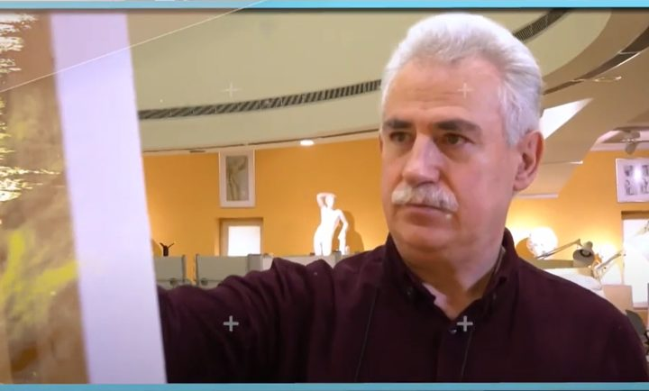
Videoyoutube.com
Teymur Rzayev, Hacı Nuran — «Xeyir Körpüsü»
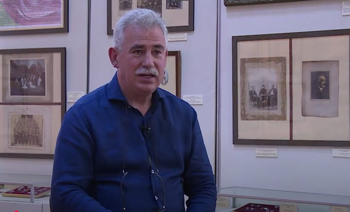
Videoyoutube.com
Vətəndaş Rəssam Teymur Rzayev
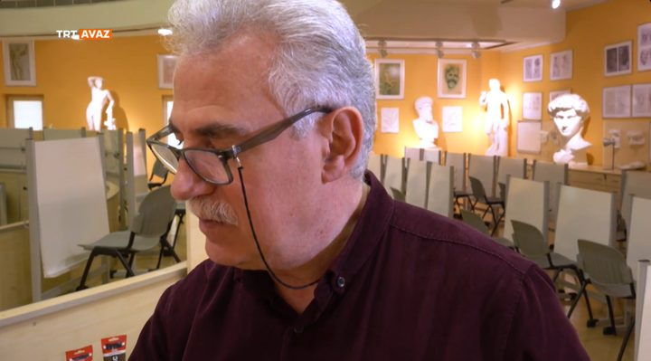
Videoyoutube.com
Türk Dünyasının Rəngləri (7-ci bölüm — Prof. Dr. Teymur Rzayev)
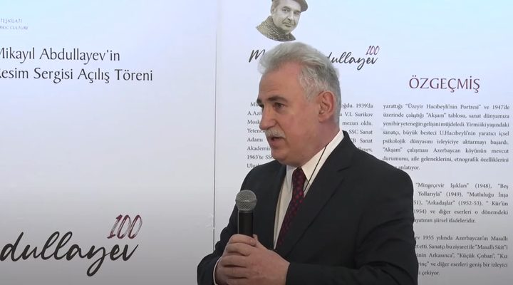
Videoyoutube.com
Teymur Rzayev — Mikayıl Abdullayev 100
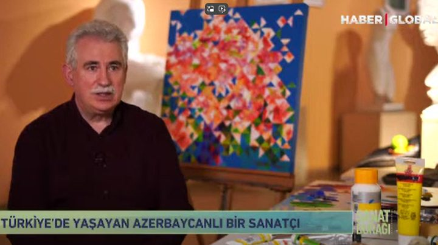
Videoyoutube.com
Teymur Rzayev — «Sanat Durağı»
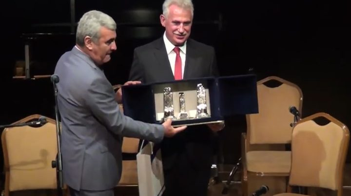
Videoyoutube.com
Teymur Rzayev 60 — Bakı Muğam Mərkəzi
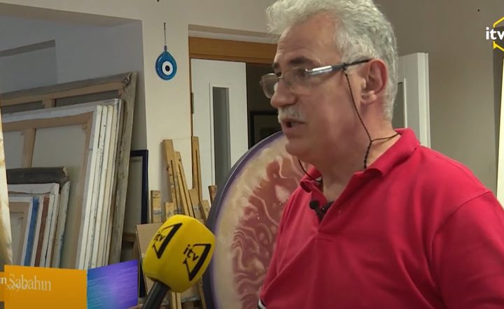
Videoyoutube.com
Türkiyədə uğur qazanmış azərbaycanlı rəssam — Teymur Rzayev
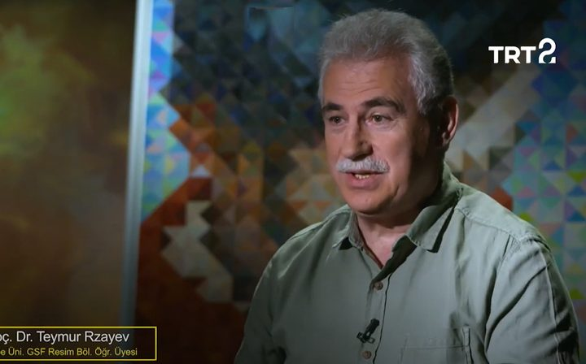
Videoyoutube.com
Teymur Rzayev & William Turner | Bir Rəsim Bir Hekayə | 31-ci bölüm
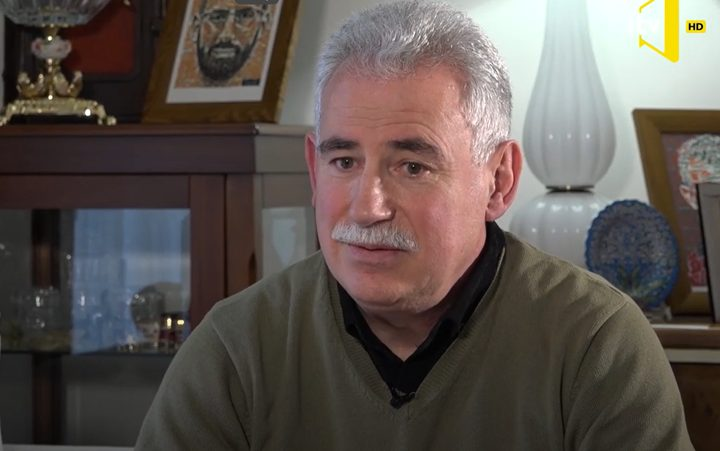
Videoyoutube.com
Azərbaycanın Dostları — Teymur Rzayev
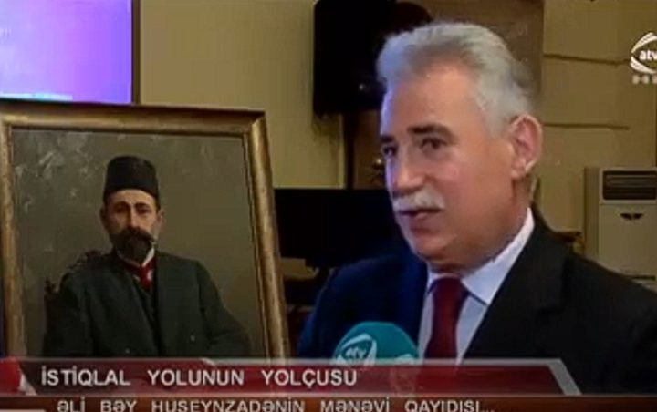
Videoyoutube.com
Əli bəy Hüseynzadənin şəxsi əşyalarının Bakıya gətirilməsi
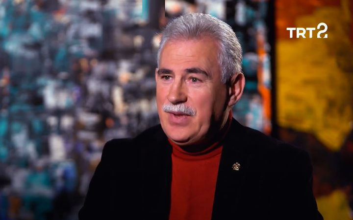
Videoyoutube.com
Teymur Rzayev & Jan Matejko | Bir Rəsim Bir Hekayə | 4-cü bölüm
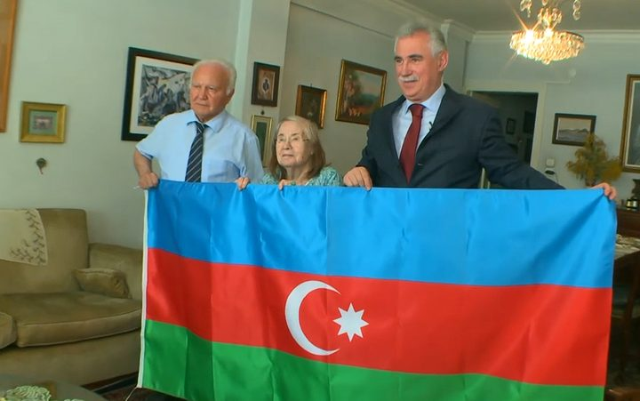
Videoyoutube.com
Əli bəy Hüseynzadə, Teymur Rzayev — Azərbaycan bayrağının təqdimatı
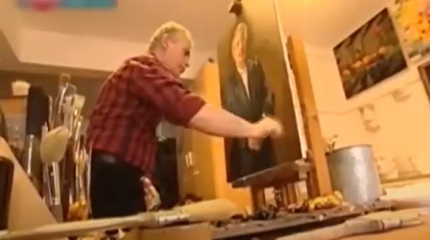
Videoyoutube.com